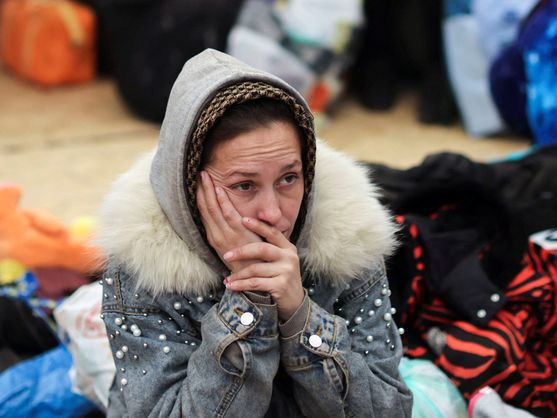
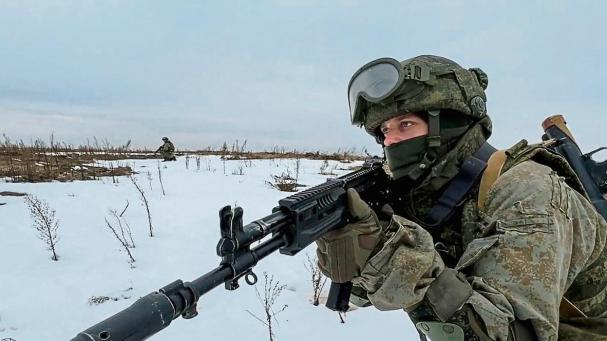

La capital de Ucrania, Kiev, aún resiste al asedio de las tropas de Vladimir Putin, pero Rusia ha advertido al país  de una "catástrofe humanitaria" si las fuerzas ucranianas no se rindenLa barrera de los siete días de guerra en Ucrania ya se ha superado con facilidad mientras la capital del país, Kiev, resiste a las tropas invasoras de Rusia. Hasta la fecha, la mayor urbe ucraniana aguanta el asedio de las tropas de Vladimir Putin, aunque ya se ha anticipado una ofensiva aun mayor, sin igual, con la que conseguir arrebatar definitivamente del control de Volodimir Zelenski los puntos estratégidos del mapa ucraniano.
- En el onceavo día de conflicto desde la invasión de Rusia a Ucrania, se espera que el número de refugiados alcance hoy 1,5 millones. 
- Mientras las tropas rusas endurecen la ofensiva en el sureste del país, los ciudadanos de Kyiv se apresuran a salir de la ciudad antes de que se intensifiquen los ataques de nuevo.
- Putin denuncia que las sanciones occidentales son similares a una declaración de guerra y la prensa rusa acusa, sin pruebas, a Ucrania de estar construyendo una bomba sucia nuclear, un tipo de explosivo que incluye polvo o perdigones radioactivos.
- Aumentan las sanciones económicas impuestas a Rusia: Mastercard y Visa suspenden las operaciones en el país y paralizan todas las transacciones.